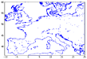

∴ extract/save coastline data
Easy way to get coastline data in some lon x lat range:
[
download
]

⁂
As alternative, you can download coast lon x lat as a two columns txt file from the NOAA coastline extractor
http://www.ngdc.noaa.gov/mgg_coastline/
§
LINKS
·
coastline extractor
·
gshhs data set